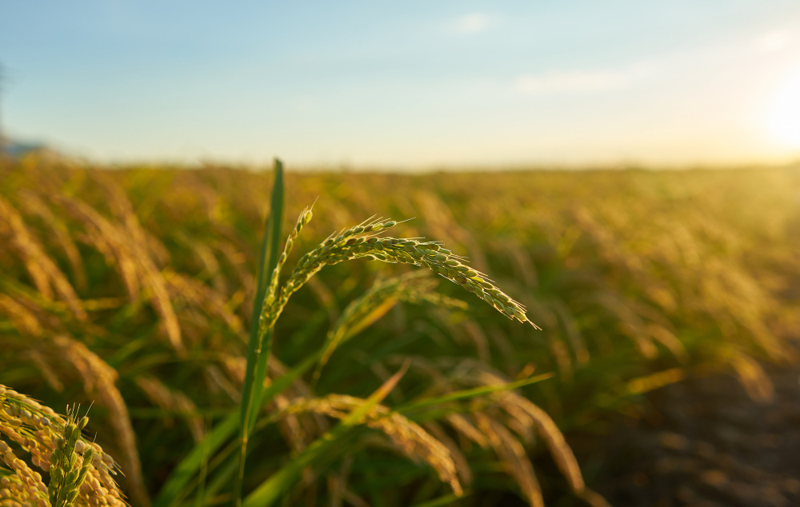

O AgriRS integra um projeto firmado entre a Companhia Nacional de Abastecimento (Conab) e o Instituto Nacional de Pesquisas Espaciais (INPE) com o objetivo de mapear, por meio de imagens de satélite, as áreas cultivadas com milho primeira safra, arroz irrigado e trigo no estado do Rio Grande do Sul, além de milho (primeira e segunda safra) e trigo nos estados do Paraná e de São Paulo. A metodologia adotada inclui a construção de um painel utilizando amostragem aleatória estratificada em dois estágios que serviu para estimar a área cultivada e para validar o mapeamento. Após a seleção das amostras são realizados trabalhos de campo para visitar os pontos sorteados in loco (pontos para validação) e para coletar dados de treinamento. Com os dados coletados, a classificação da áreas agrícolas é feita com o uso de modelos de machine leraning. A iniciativa busca fortalecer o monitoramento agrícola nacional, melhorar as estimativas de safra, apoiar ações de segurança alimentar e contribuir para a mitigação dos impactos das mudanças climáticas e para o desenvolvimento sustentável da agricultura.